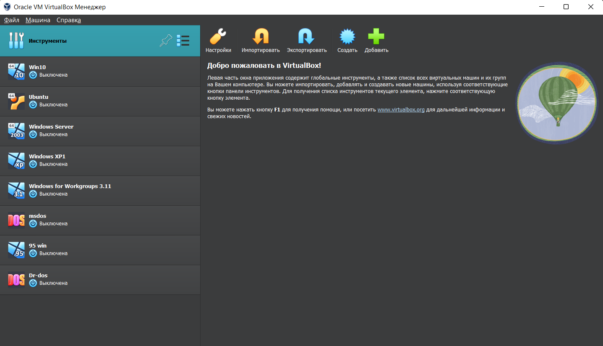
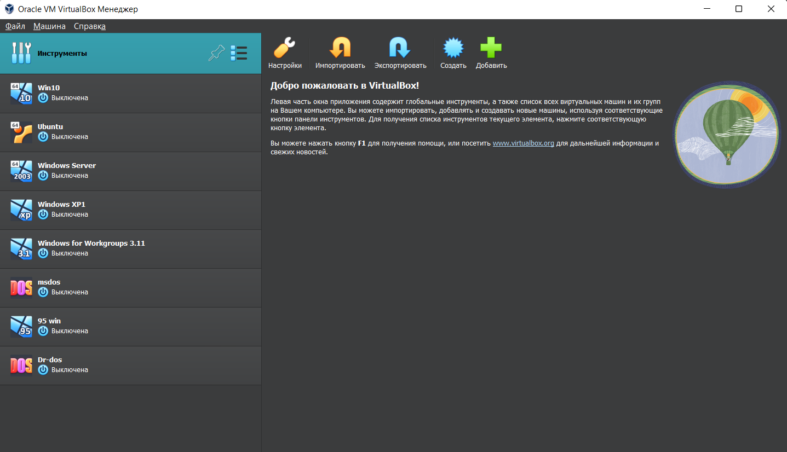

VM Virtual box

VM VirtualBox – это программное обеспечение для виртуализации персонального компьютера от компании Oracle. У программы есть две версии - с открытым исходным кодом, и закрытая. С помощью VirtualBox вы можете запускать различные операционные системы одновременно, настраивать между ними сеть, обмениваться файлами и многое другое.

Основные возможности VirtualBox

- Создание «переносных» изолированных пользовательских сред с установленным в них программным обеспечением, направленных на решение определенного круга задач. Например, незачем перегружать операционную систему домашнего компьютера установкой различных специфических программ, которые не используются другими пользователями. Можно создать виртуальную машину с установленным в ней необходимым ПО (например, дизайнерским) и запускать ее только по мере надобности. При этом ее можно легко перенести на другую рабочую станцию и быть уверенным, что реестр, системные файлы и настройки хостовой системы останутся нетронутыми.
- Создание защищенных сред для выхода в Интернет. Если троянская программа или вирус причинят вред внутри виртуальной машины, то можно удалить эту виртуальную машину и создать новую, при этом все данные хостовой системы будут надежно защищены.
- Эксперименты с различным программным обеспечением и операционными системами. Возможность одновременного запуска нескольких операционных систем в виртуальных машинах позволяет использовать различные программы в необходимых вам ОС и обеспечивать передачу данных между ними. Безусловно, виртуальные машины открывают широкие просторы для обучения, как новым операционным системам, так и настройке различных сетевых служб и протоколов взаимодействия между различными ОС.